Grafana Guide: Rows, Tabs, Layouts, Annotations and Links
|
This content was generated with the assistance of AI and should be verified against the official documentation before being relied on in production. |
Checked on 2026-11-11 against Grafana 13.3.x.
What you build
You take the dashboard Bookshelf (guides) and give it structure. You group its panels into a row called Traffic, try a tab, change the layout of the grid, add a rule that can show or hide a panel, mark failures on the chart with an annotation query and with an annotation you add by hand, and add a link to the dashboard and a link to the panel that open the logs of the Bookshelf service.
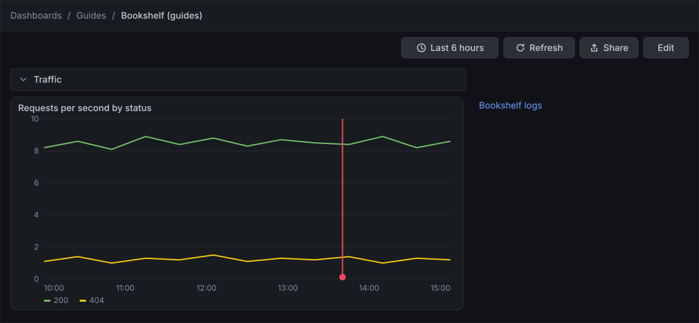
Before you start
-
Start the Grafana profile of the hands-on lab and wait about a minute:
cd lab docker compose --profile grafana up -d -
Open http://localhost:3000, sign in as
adminwith the passwordadmin, and click Skip when Grafana 13.3 asks you to update the default password. -
Do the previous guide, Variables, filters and repeats, or at least Create a dashboard and the first panel, which creates the dashboard Bookshelf (guides) in the folder Guides. If the dashboard already has more panels from the guides in between, the steps work the same; you only need two panels.
-
The data source Prometheus is provisioned by the lab and the load generator sends traffic in its default mode, which gives the request rate chart something to draw.
-
The guide was checked on Grafana Enterprise 13.3.0 (the free image, no licence key). Editing dashboards needs the Editor or Admin role of the organization;
adminhas it. -
A few controls (the row and tab headers, the rule of Show / hide rules, the forms of an annotation query, of a link and of a panel link, and the annotation popover) were not opened when the guide was checked. The steps name them without describing their exact layout, and the figures draw them in a simplified way. Follow the labels of your screen.
-
The figures are drawings of the Grafana 13.3 user interface, not screenshots, so small details can differ from your screen. A highlighted box with a number marks the control of the step with the same number.
Steps
The work happens in the edit mode of the dashboard, with the Add pane, the Dashboard pane and the Panel pane in the right sidebar. The guide Create a dashboard and the first panel shows the map of this screen; the steps below point to the regions they use.
Open the dashboard in edit mode
-
In the left navigation, click Dashboards → Guides → Bookshelf (guides).
-
Click Edit at the right of the toolbar.
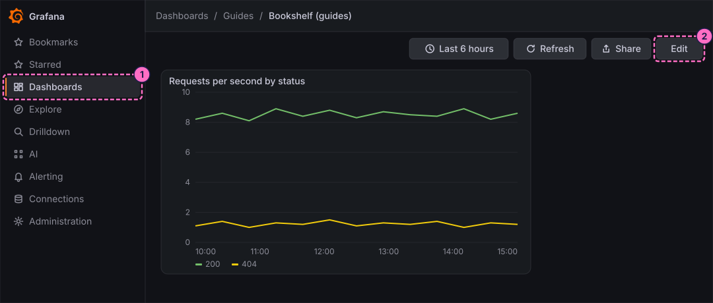
-
Click Add at the left of the toolbar. The Add pane opens in the right sidebar.
-
The next steps need two panels. If the dashboard has only one, click the Panel tile ("Drag or click to add a panel") of the Add pane; Grafana adds a second, empty panel called New panel, which is all you need.
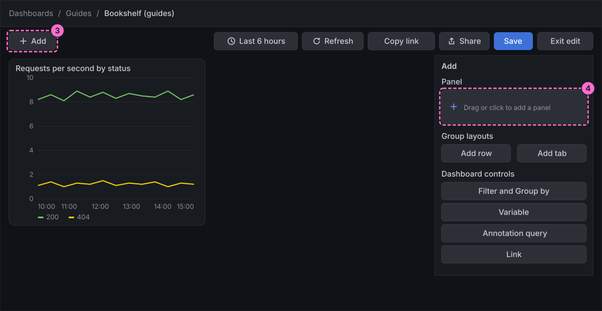
Group panels in a row and a tab
-
Click Add again to open the Add pane.
-
Under Group layouts, click Add row.
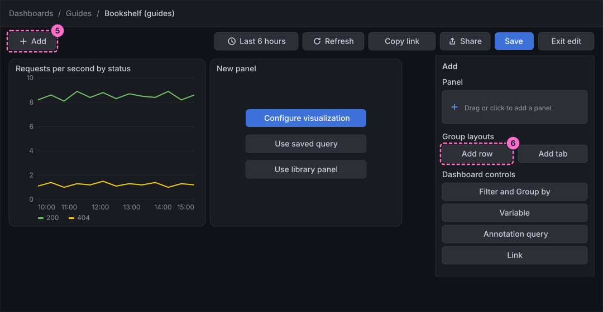
-
Select the new row and type
Trafficas its title in the sidebar. The row header shows the title, and a click on its chevron collapses the panels under it.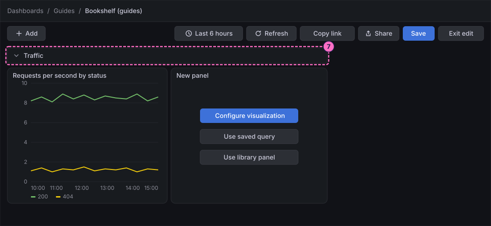
-
Click Add once more to open the Add pane.
-
Under Group layouts, click Add tab. Tabs group panels as rows do, but show one group at a time. Give the tab a title in the sidebar, as you did for the row.
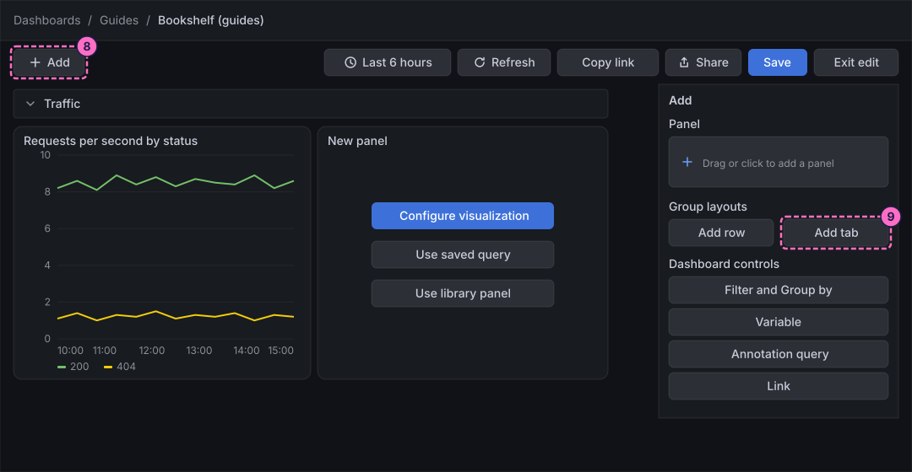
Choose the layout of the grid
-
In the icon strip of the right sidebar, click Options. The Dashboard pane opens: View all settings, Title, Description, Layout and the collapsible sections Filters, Variables, Annotations and Links.
-
Under Layout, click Custom. In the custom grid you place and resize each panel freely by dragging; try moving a panel and then drag it back.
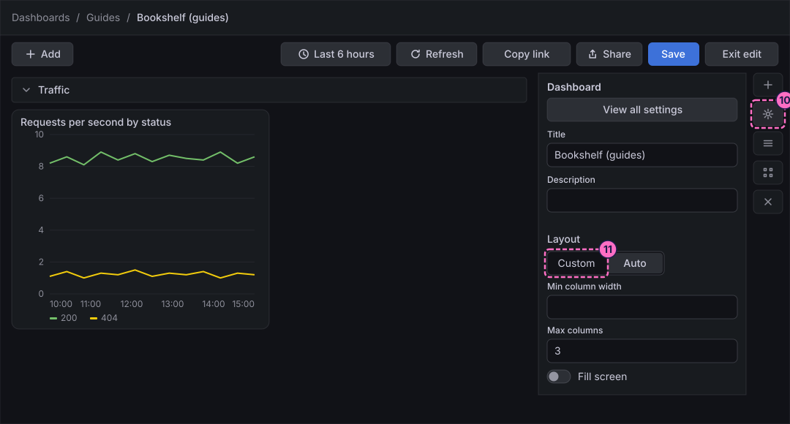
-
Click Auto to go back to the layout that lets Grafana arrange the panels.
-
Type
2in Max columns. The panels now share rows of at most two columns, so on a narrow canvas they stack one under the other.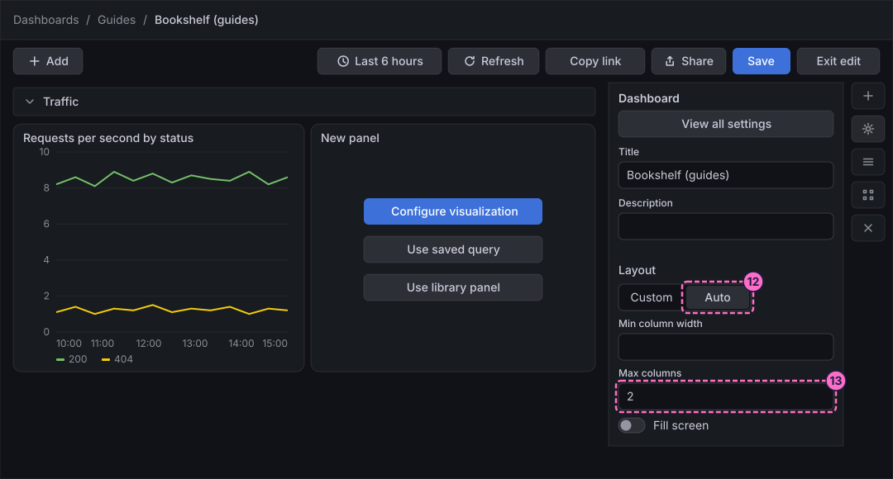
Show or hide a panel with a rule
-
Click the panel New panel to select it. The Panel pane replaces the Dashboard pane in the sidebar.
-
In the Panel pane, open the section Show / hide rules. It holds Panel visibility with the choices Show and Hide.
-
Click Add rule to see how a rule is built; the rule decides when the panel is shown or hidden, for example by the value of a variable. Do not keep a rule that hides the panel: leave Panel visibility on Show and remove the rule again, or set it so that the panel stays visible.
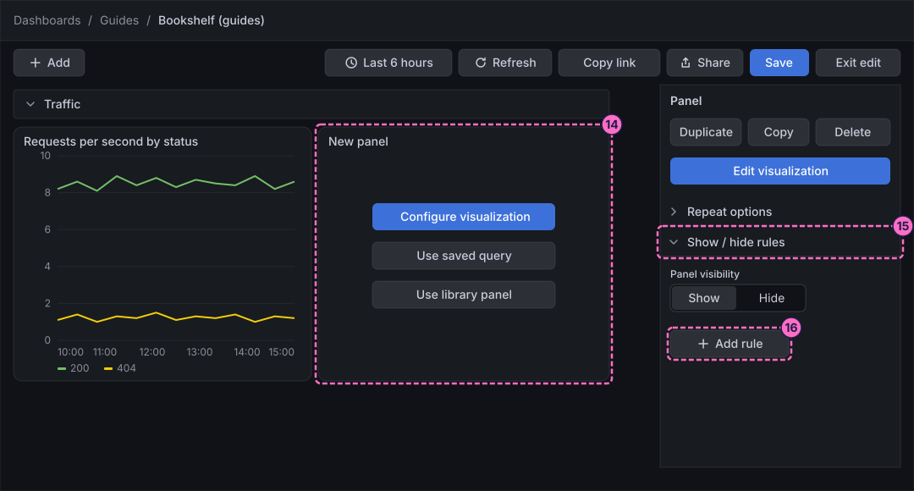
Add an annotation query and a dashboard link
An annotation query draws a mark on the chart every time a query returns a value, so the dashboard marks the failures for you.
-
Click Add to open the Add pane.
-
Under Dashboard controls, click Annotation query.
-
In the form that opens, give the query the name
Failure marks, choose the data source Prometheus and type this expression, which returns a value whenever the Bookshelf service answers with a 5xx status. Confirm the form with its own button:sum(rate(http_server_requests_seconds_count{application="bookshelf",status=~"5.."}[1m])) > 0 -
Open the Add pane again and, under Dashboard controls, click Link.
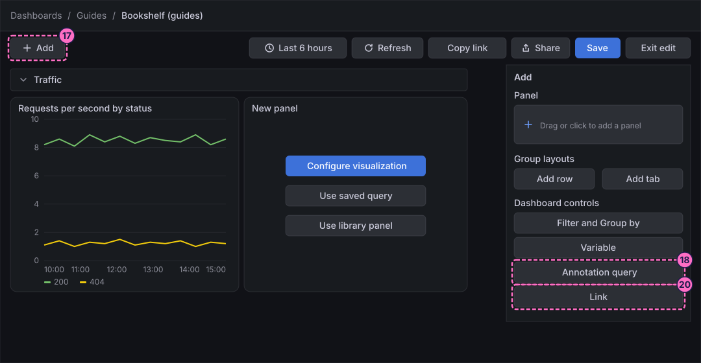
-
In the form of the link, give it the title
Bookshelf logsand the URLhttp://localhost:3000/a/grafana-lokiexplore-app/explore, which is the Logs drilldown of the lab. Confirm the form. -
In the Dashboard pane (the Options icon), open the section Annotations. It lists the groups Above dashboard, Controls menu and Hidden; the built-in Annotations & Alerts is under Hidden, and your Failure marks is listed with the others.
-
Open the section Links. It lists Bookshelf logs.
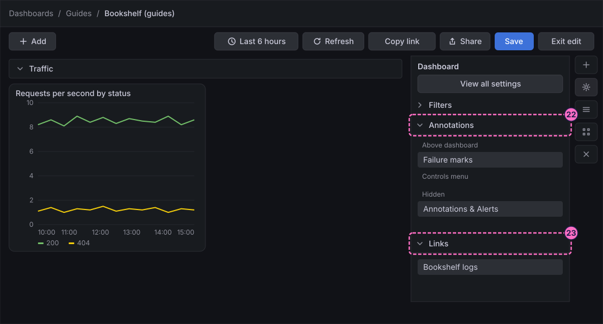
Add a panel link
A panel link sits in the menu of one panel and opens another page, as the dashboard link does for the whole dashboard.
-
Click the panel Requests per second by status to select it.
-
Click Edit visualization in the Panel pane.
-
In the options pane of the panel editor, open the category Panel links.
-
Add a link with the title
Explore the Bookshelfand the URLhttp://localhost:3000/explore, and confirm it. -
Click Save in the header of the editor. The Save dashboard drawer opens.
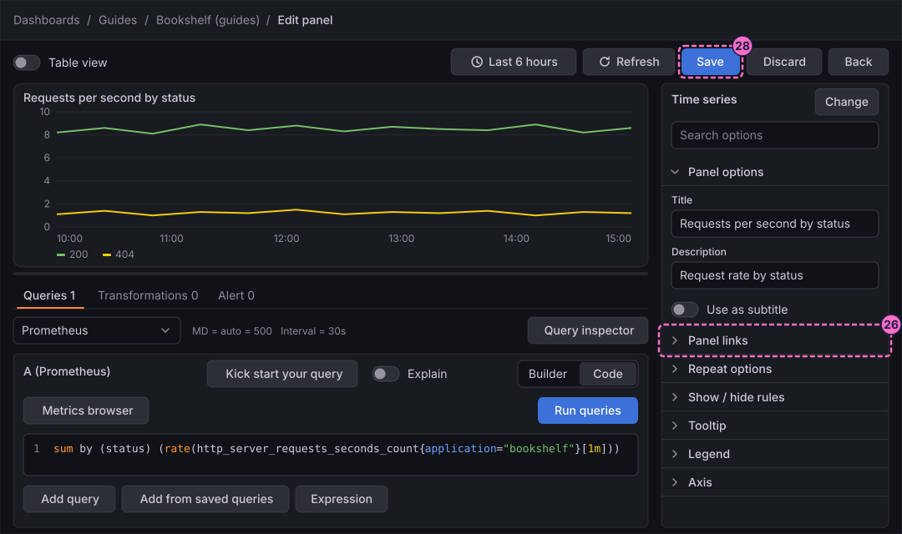
Save the dashboard and leave edit mode
-
In Message, type
Rows, layout, annotation query and links. The field is optional; it labels this version in the version history, which the next guide uses. -
Click Save.
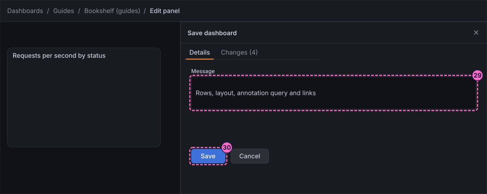
-
Click Back to return to the dashboard.
-
Click Exit edit.
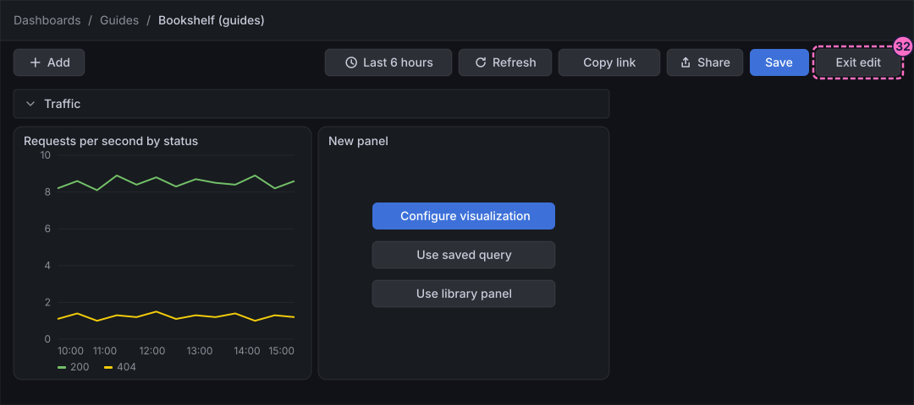
-
If Grafana 13.3.0 shows the dialog Unsaved changes ("Do you want to save your changes?"), which it did even right after a save, click Save.
-
In the Save dashboard drawer that opens, click Save again. Edit mode closes.
Check the result
The dashboard must show the row Traffic above the panels, and the chart must show the vertical line of the annotation Failure test. Hover over the marker at the bottom of the line to read its text.
To see the annotation query work, force errors, wait about a minute and press Refresh; marks of the query Failure marks appear on the chart while the status 500 is answered:
curl -X POST localhost:8090/mode/failingRestore normal traffic afterwards:
curl -X POST localhost:8090/mode/normalOpen the menu of the panel to find the panel link Explore the Bookshelf. The link Bookshelf logs is shown with the dashboard controls under the toolbar.
Variations
-
Use the same Add pane to add an annotation query for the logs: choose the data source Loki instead of Prometheus and a log query such as
{application="bookshelf"} |= "ERROR". -
Put the annotation in a region by selecting a time range on the chart with the same Ctrl (Cmd) gesture, as the reference page on annotations describes.
-
Make a link context-aware by adding a variable to its URL, as the guide on variables shows.
What can go wrong
| Symptom | Cause | Fix |
|---|---|---|
Add row or Add tab is not offered |
The Add pane is not open, or the dashboard is not in edit mode. |
Click Edit, then Add, and look under Group layouts. |
The chart shows no mark for Failure marks |
The load generator is in its normal mode, so there is no 5xx to mark, or the time range does not include the failure. |
Send |
The Ctrl click opens a browser menu or does nothing |
The dashboard is still in edit mode, or the modifier key of your system is another one. |
Click Exit edit first and use Cmd on macOS. The reference page on annotations describes other ways to add one. |
A panel disappeared after a rule was added |
The rule hides the panel when its condition is true. |
Open Show / hide rules of the panel and remove the rule, or set Panel visibility to Show. |
Clean up
Keep the dashboard: the next guides extend it. Rows, layouts, annotations and links are saved in the dashboard. To go back to the previous layout, restore the earlier version in the version history of the dashboard, which the guide on versions shows, and to remove the manual annotation, open it on the chart and delete it.
To remove everything else the lab stores, stop the profile with docker compose --profile grafana down -v, which also deletes the volumes.
Where to go next
-
Previous guide: Variables, filters and repeats.
-
Next guide: Reuse, versions and sharing, which makes a library panel, restores a version and shares the dashboard.
-
Reference: Building Dashboards explains edit mode, layouts, rows, tabs and settings in full.
-
Reference: Annotations and Links covers annotation queries, regions, tags, dashboard links, panel links and data links.